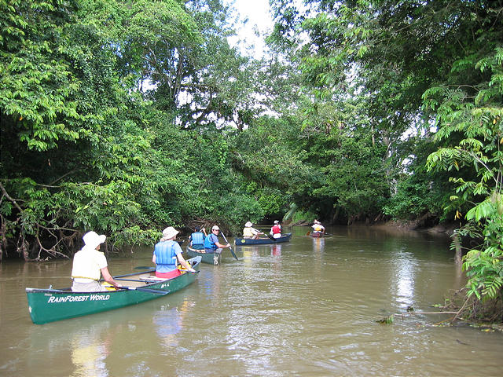
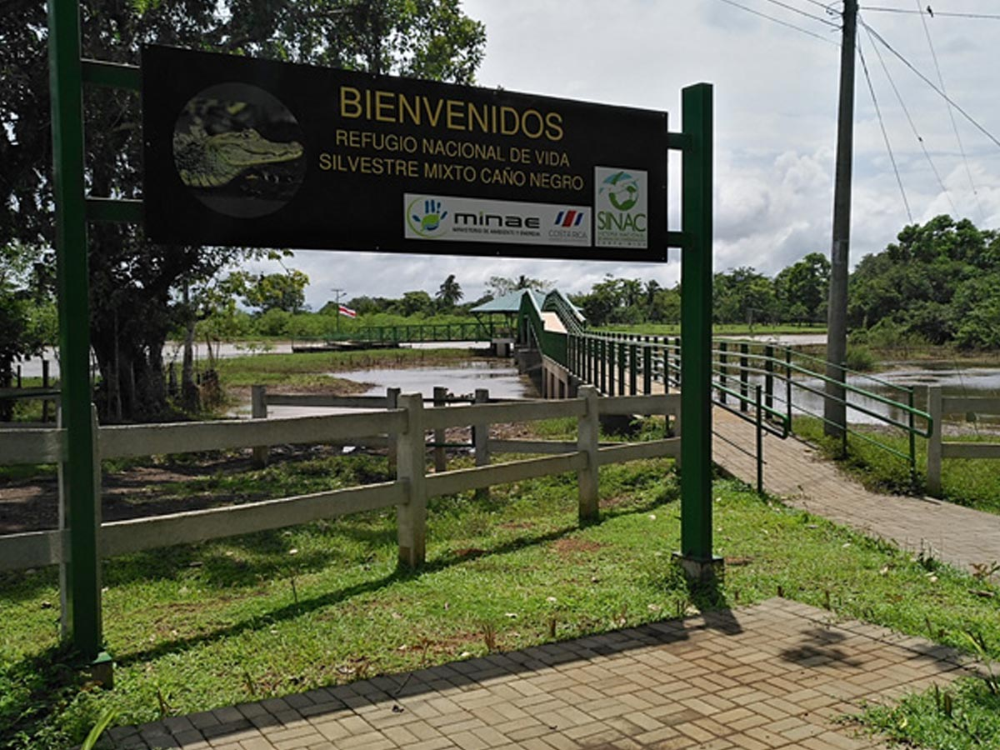
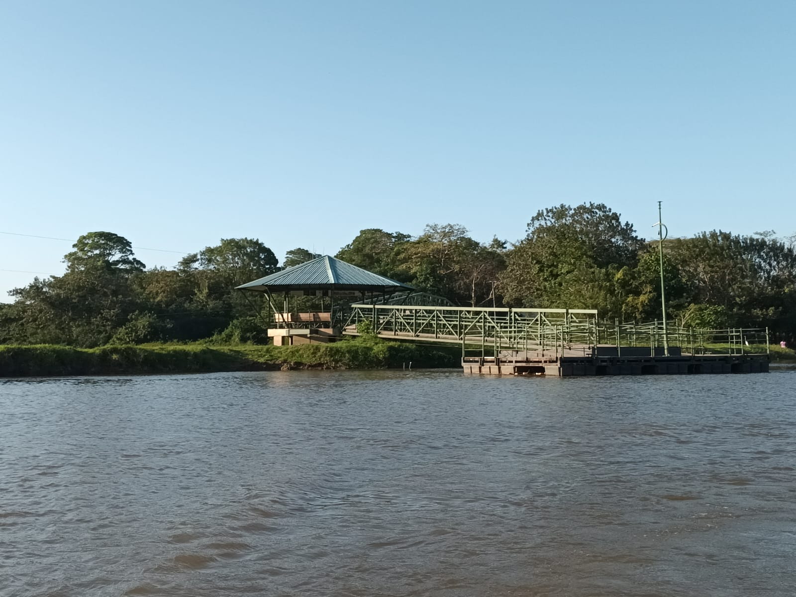

ADI Caño Negro
Cultura, tradición y naturaleza
Un lugar donde la vida comunitaria, el trabajo en conjunto y el respeto por la naturaleza forman parte de la identidad de cada familia.
Caño Negro no solo destaca por su riqueza natural, sino también por la historia, las tradiciones y el esfuerzo colectivo de su gente.

La pesca es una actividad fundamental para muchas familias de la comunidad, realizada principalmente en el río Frío y en los humedales. Además de proveer alimento, representa una fuente de ingresos y fortalece la convivencia entre los habitantes.
Se emplean prácticas que buscan respetar el equilibrio natural del ecosistema, formando parte de la identidad cultural de Caño Negro y promoviendo la sostenibilidad, la tradición y el respeto por la naturaleza.
Ver más información
Caño Negro es una comunidad pequeña pero muy unida. Las personas se conocen, colaboran entre sí y trabajan juntas para salir adelante. La vida gira en torno a la naturaleza, el río y las tradiciones que han pasado de generación en generación.
Con esfuerzo y organización, la comunidad protege su entorno y promueve un turismo responsable que beneficie a sus habitantes y fortalezca el desarrollo local.
Ver más información
Los puentes flotantes son una atracción representativa de la comunidad de Caño Negro. Más que una estructura, son un punto de encuentro donde vecinos y visitantes comparten conversaciones y disfrutan del paisaje.
Durante la temporada lluviosa, cuando el nivel del agua aumenta, estos puentes se adaptan de forma natural al entorno, reflejando la capacidad de la comunidad para convivir en armonía con la naturaleza.
Ver más informaciónCaño Negro
Conocer Caño Negro también es conocer a su gente, sus costumbres, su historia y la forma en que conviven con la naturaleza.